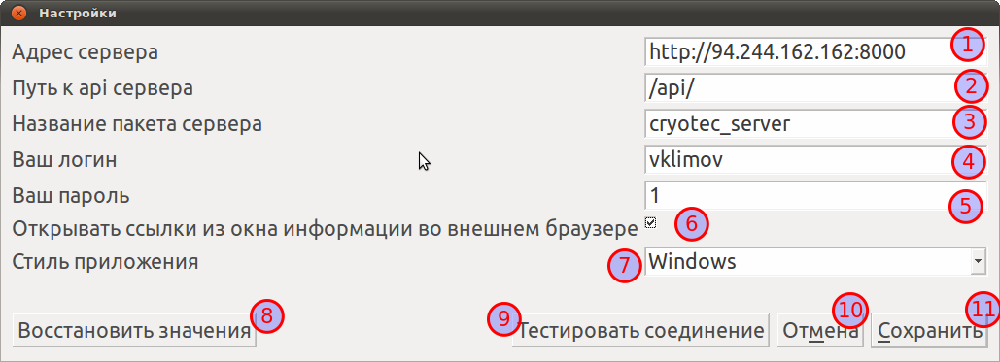

Настройки

- Адрес сервера - адрес сервера, на котором установленна серверная часть системы Обращайтесь к администратору
- Путь к api сервера - адрес api страницы сервера. Обращайтесь к администратору
- Название пакета сервера Обращайтесь к администратору
- Ваш логин - ваше имя пользователя
- Ваш пароль - ваш пароль
- Открывать ссылки из окна информации во внешнем браузере - если отмечено, ссылки на административную панель системы из окна информации будут открываться во внешнем браузере. Если нет, то они будут открываться внутри окна информации
- Стиль приложения - визуальный стиль приложения
- Восстановить значения - при нажатии на эту кнопку все настройки сбросятся на значения по умолчанию
- Тестировать соединение - тестировать соединение с новыми настройками
- Отмена - отменяет изменения настроек
- Сохранить - сохраняет настройки